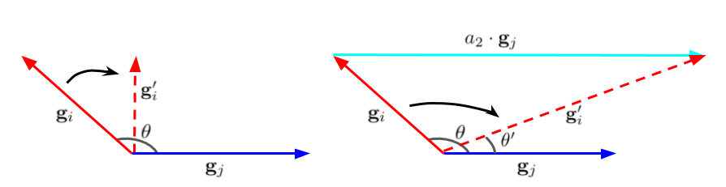
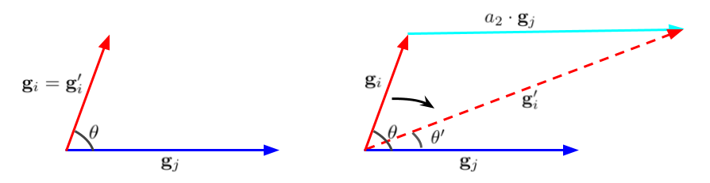

Nudge each task pair back to its own healthy level of cooperation, not to zero.
PCGrad cuts every fight to exactly zero. GradVac asks whether zero is the right target: each pair of tasks gets its own target cosine, learned from how that pair usually cooperates, and sagging pairs are nudged back up to it.
On this page
Surgery is all-or-nothing: it either removes the whole conflicting part or leaves the pair untouched. But there is a quieter assumption hiding inside the rule, and I did not notice it at first. Read the rule again: if the cosine is negative, project until it is zero. Every pair gets the same target: zero. No questions asked. The rule never asks what the pair's relationship was before the fight, or whether these two tasks are friends or strangers.
That is a strange thing to assume about one model trained on many languages at once, with uneven
resources across them and some pairs related while others are distant. Some task pairs genuinely
cooperate, and forcing them to zero would not fix a fight, it would destroy a friendship. The
question is whether we can tell the difference, and the answer turns out to be yes, if we keep a
little memory of what each pair normally looks like.
Here is the intuition I keep coming back to. Surgery happens after the fight breaks out. A vaccine holds each pair at its healthy level so the fight never starts. That is where the name comes from: Gradient Vaccine, GradVac. And it turns out PCGrad is literally the special case where the target is zero for every pair: set every pair's target to zero and GradVac's nudge becomes PCGrad's cut.
The GradVac authors started by watching instead of fixing. They trained one translation model on many languages at once (each language pair is a task), and at regular checkpoints they measured the cosine between every pair of task gradients. Three things showed up.
So every task pair has its own natural level of cooperation: strongly positive for related tasks, near zero for distant ones. French and Spanish's gradients naturally agree, so PCGrad's alarm never goes off.
And if it did, its target of zero would be a step backwards, blocking the very cooperation that lets related languages help each other. PCGrad can stop a fight, but it cannot notice that two friends have started cooperating less than they used to.
Sure enough, PCGrad did nothing on most steps of multilingual training: no cosines were negative, yet a lot of help was being left on the table.
The fix: keep a running estimate of what "normal" looks like for each pair, a slow-moving average of the cosines seen so far, tracked separately for each group of layers. Each batch nudges the pair's target only a small fraction of the way toward the newly measured cosine, about one percent, so one noisy batch cannot yank it around. That target is the "normal" the pair is held to.
The running target update, written as an equation:
Here φ̂ij is the pair's running target, φij(t) is this batch's measured cosine for the pair, and β is the averaging speed. Keep the averaging speed slow (0.01 worked best).
Whenever the current cosine dips below this target, GradVac nudges one task's gradient toward the other's by mixing in a little of the other gradient, with the dose solved so the new cosine lands exactly on the target. If the pair is as aligned as usual, the dose is zero and nothing happens. If alignment starts to sag, the early warning sign of a fight that has not happened yet, the gradient gets a small dose before the cosine can turn negative.
The dose measures the sag: when the current cosine already sits at the target, the dose collapses to zero. When alignment has sagged below target, the dose is exactly the rotation that lands the pair back on its own target in one shot, scaled to the arrows' sizes. Target zero is surgery; any other target is the vaccine.
Check whether the two tasks agree less than their healthy target: if their cosine similarity falls below it, they need an edit.
Nudge task i's gradient toward task j, just enough to bring their agreement back up to the target level.
Add the edited gradient to task j's untouched gradient: this is the final combined update direction.
Here gi is task i's gradient, gj is task j's gradient, cos(gi, gj) is how aligned the two gradients are, φij is the target alignment, the φ̂ij of the running target equation, per pair and per layer group, giedited is task i's gradient after the edit, ∥gi∥ and ∥gj∥ are the gradient lengths, the square roots are sines: √(1−cos²) is the sine of the pair's angle and √(1−φ²) the sine of the target angle, · means times, < means less than, and := means becomes, updated to.
One GradVac training step on a single pair, slowed to five steps.
# grads = [g_1..g_K]; target[i,j] = running target cosine, init 0
for i, j in pairs:
cos_ij = grads[i] @ grads[j] / (norm(grads[i]) * norm(grads[j]))
target[i,j] = (1 - beta) * target[i,j] + beta * cos_ij # slow running target
if cos_ij < target[i,j]: # fighting below their normal?
a = solve_for_cosine(grads[i], grads[j], target[i,j]) # restoring blend
grads[i] = grads[i] + a * grads[j] # nudge, not a full cut
d = sum(grads) # combine the edited gradientsgi task i's gradientgj task j's gradientcos(gi, gj) how aligned the two gradients areφij the target alignmentgiedited task i's gradient after the edit: the red g1′ arrow in the diagramgiedited + gj the edited sum‖gi‖, ‖gj‖ the gradient lengths√(1−cos²) the sine of the pair's angle; √(1−φ²) the sine of the target angle· times: scaling< less than:= becomes: updated tog1, the blue arrow is g2, and the gray arc is the angle between them. The amber dashed outline marks what the current step is about.g1's tip; the red arrow is the nudged gradient g1′; the red arc is the pair's angle after the nudge, closed to the target.g2 placed at g1′'s tip; the green arrow is their sum, the training step.Two cases, side by side. Case (a) is a pair that is really fighting, negative cosine. Case (b) is a pair that agrees, positive cosine, but has sagged below its healthy level.

Case (a): negative similarity. Left is PCGrad, right is GradVac.

Case (b): positive similarity. Left is PCGrad, right is GradVac.
Rebuilt from Figure 5 of Wang et al. (ICLR 2021). arXiv:2010.05874
Figure 5, verbatim caption: "Comparing PCGrad (left) with GradVac (right) in two cases. (a): For negative similarity, both methods are effective but GradVac can utilize adaptive objectives between different tasks. (b): For positive similarity, only GradVac is active while PCGrad stays "idle"."
GradVac restores each pair to its own historical target with the smallest nudge that lands the cosine exactly on it. At target 0, the nudge becomes exactly PCGrad's projection, the special case where the target is zero for every pair.
The setup behind the claims: one translation model trained jointly on many language pairs at once, each pair a separate task sharing the same model, scored by translation quality against the same model trained plainly and with GradNorm, MGDA, and PCGrad. On small-scale WMT translation (WMT is the standard machine-translation benchmark), GradVac beat the plain baseline and all three of GradNorm, MGDA, and PCGrad: on average and on every single language, which multitask methods rarely manage. On a 25-language-pair production benchmark the gains held up and were largest exactly where interference bites hardest: the high-resource languages. In a second setup, a multilingual BERT model fine-tuned for named-entity recognition, GradVac improved that too.
And there is a free side product I keep coming back to: the pairwise-cosine log itself costs a few lines of code and draws me a map of how my tasks relate while I train, which is why the Field Guide puts it on the diagnose-first checklist. Even if you never vaccinate a single pair, watching the cosines is worth it.
Three settings fold into when-it-helps rules. Keep the averaging speed slow (0.01
worked best): one noisy batch cannot yank a target around, but the target still follows real drift
over training. Vaccinate the low-resource tasks, which have the most to gain from borrowed
alignment. And keep one target per layer group instead of one for the whole model, since alignment
varies from layer to layer.
K backward passes and K stored gradients per step, where K is the number of tasks. With many tasks
that is most of your budget. The fix is the subsampling trick used by CAGrad-Fast: apply the cuts
or nudges to a random handful of tasks per step. GradVac additionally stores one running target per
pair per layer group, which is tiny next to the gradients.
Direction is handled softly now: each pair is nudged back to its own healthy level, never forced to a universal zero. But nothing on this page promises anything about the task that ends up worst off. What if, instead of nudging pairs back to normal, we demanded a guarantee on the worst task? That is the CAGrad page's question.
The two volume knobs and the two steering methods, side by side:
| Method | The question it answers |
|---|---|
| GradNorm | How loud should each task be, to keep progress balanced? (learned, driven by training dynamics) |
| Uncertainty | How loud should each task be, given how noisy it inherently is? (learned, driven by the data) |
| PCGrad | How should the directions be edited so tasks stop fighting? |
| GradVac (this page) | How should each pair of tasks be nudged back to the agreement level where it learns best? |
| CAGrad | How do we protect the worst-off task and stay near the average, with a guarantee? |
| MGDA | What direction helps every task at once, and where does the run land on the Pareto frontier? |